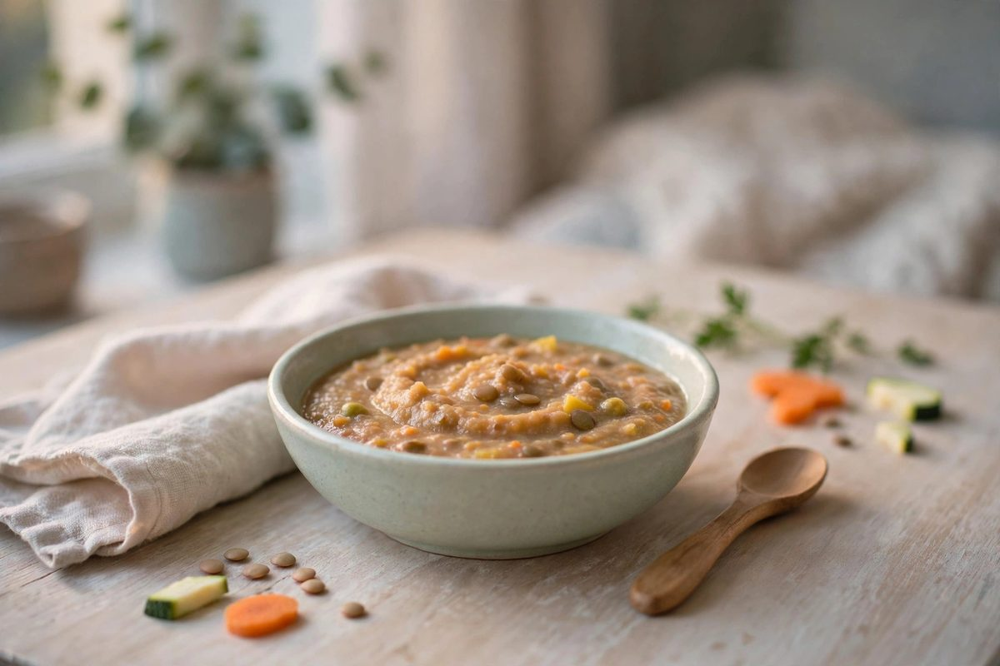

Home » Guides
Baby Dinner Recipes

Dinner is often the family meal, and it is the perfect chance for your baby to eat with everyone else. A good baby dinner is simply a family meal adapted for a small eater: less salt, softer textures, and smaller pieces. This guide gives five easy dinner recipes that work for babies from six months to one year, with notes on how to adapt each one for different weaning stages. Every recipe uses ordinary ingredients and takes less than thirty minutes.
Carrot and lentil stew
Rinse 100 grams of red lentils and add them to a pan with two chopped carrots, one chopped onion, and 500 millilitres of water. Simmer for about twenty minutes until the lentils are soft and the carrots are tender. Blend to a smooth puree for a six-month-old, mash lightly for an eight-month-old, or serve as a thick stew with soft bread for a one-year-old. Red lentils are rich in iron and protein, and the carrots add sweetness and vitamin A. This stew freezes well in small portions, so make a double batch and save half for another day.
Chicken and vegetable mash
Steam one chicken breast with a chopped sweet potato and a handful of peas for about fifteen minutes until the chicken is cooked through and the vegetables are soft. Blend with a little cooking water for younger babies, or chop into small pieces for older ones. Chicken provides protein and iron, while sweet potato adds vitamin A and fibre. You can add a pinch of mild herbs such as thyme or parsley for flavour. Check carefully for any bones, and always make sure the chicken is fully cooked with no pink meat.
Salmon and broccoli pasta
Cook small pasta shapes until very soft, and steam a salmon fillet with a few broccoli florets for about ten minutes. Flake the salmon, checking carefully for bones, and chop the broccoli small. Mix with the pasta and a spoonful of cream cheese or a little milk to make a creamy sauce. Salmon is rich in omega-3 fats that support brain development, and broccoli adds vitamin C and fibre. This is a good dinner for babies from eight months onwards, and the family can eat the same dish with seasoning added for adults.
Bean and vegetable chilli
Gently fry an onion and a pepper in a little olive oil, then add a tin of chopped tomatoes, a tin of kidney beans, and a teaspoon of mild paprika. Simmer for fifteen minutes until thick. Blend or mash for younger babies, or serve with rice for older ones. Beans are an excellent source of protein, iron, and fibre, and this mild chilli is a good way to introduce gentle spice. Leave out chilli heat entirely for babies. This recipe makes several portions, so freeze the extra in small pots for busy evenings.
Egg and vegetable frittata
Whisk three eggs and pour them into a pan with cooked potato, peas, and grated courgette. Cook gently on the hob, then finish under the grill until set. Cut into strips for finger food or small pieces for spoon-feeding. Eggs are a complete protein and a good source of iron and choline. Frittata is handy because it keeps in the fridge for two days and can be served cold or warm, which makes it useful for dinners away from home as well.
Cooking once, eating twice
Cooking once and eating twice is the easiest way to feed a baby. When you cook dinner, make a double batch and save a portion for the next day, either in the fridge for lunch or in the freezer for a busy evening. Dishes that work well for this are stews, curries, pasta sauces, and shepherd's pie, because they reheat well and taste just as good the next day. Store the saved portion in a small, labelled container as soon as it has cooled, and reheat it until steaming hot before serving. This habit halves the cooking you do and means a healthy meal is always ready.
Frequently Asked Questions
Can my baby eat the same dinner as the family?
Yes, from around nine to ten months, as long as it is low in salt and cut to a safe size. Cook the family meal without salt and season adult portions separately.
What time should babies eat dinner?
Most families offer dinner in the early evening, about an hour before the bedtime milk feed. A regular routine helps babies know what to expect.
How do I know if dinner is too salty?
If you can taste salt, it is too salty for a baby. Cook without salt and add it to adult portions at the table instead.
Important: every baby is different. Always follow your pediatrician's advice on when to start solids, which foods to offer, and how to introduce allergens. The guidance on this site is general information, not medical advice.